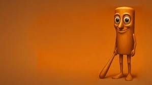
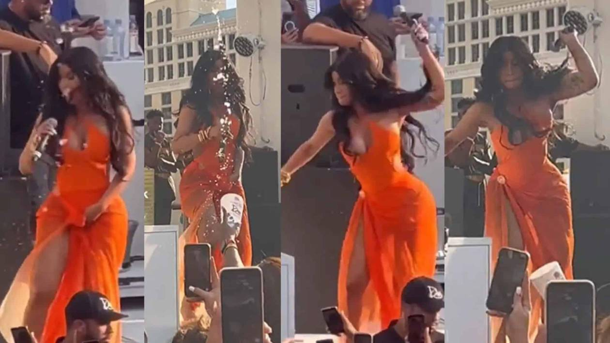

Tun tun sahur
"Tun tun tun, sahur" se refiere a un personaje y meme de origen indonesio llamado Tung Tung Tung Sahur, que se popularizó a través de la plataforma TikTok a finales de febrero de 2025, especialmente en el contexto del fenómeno conocido como "brainrot italiano". .
Ver mas
Billie Eilish y James Cameron
Billie Eilish anuncia por sorpresa en un concierto que está trabajando con el director James Cameron en un nuevo proyecto: “Es algo muy, muy especial”
Ver mas

Fan demanda a Cardi B por lanzarle un micrófono durante concierto
Hasta el momento, ni Cardi B ni sus representantes han emitido declaraciones públicas sobre el caso..
Ver mas